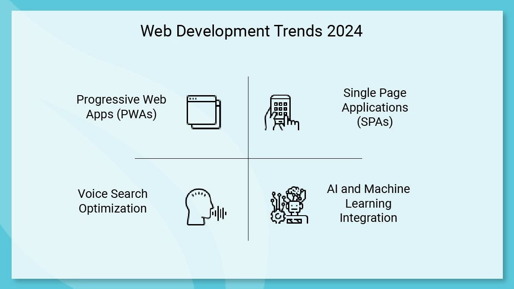

A look at today’s tools, technologies, and the future of web development.
Modern Frameworks
Modern web development is powered by frameworks like React, Angular, and Vue. These tools enable developers to build dynamic, component-based applications with reusable code and efficient rendering. React’s virtual DOM, Angular’s two-way data binding, and Vue’s simplicity have made them staples in the developer toolkit. They support modular architecture, state management, and seamless integration with APIs, making it easier to create scalable, maintainable web apps. These frameworks also align with modern development practices like agile workflows, continuous integration, and cloud deployment.
SPAs and PWAs
Single-Page Applications (SPAs) and Progressive Web Apps (PWAs) represent a leap forward in user experience. SPAs load a single HTML page and dynamically update content without refreshing the browser, resulting in faster interactions and smoother navigation. PWAs combine the best of web and mobile apps, offering offline access, push notifications, and installable interfaces. They’re built using service workers, manifest files, and responsive design principles. Together, SPAs and PWAs deliver app-like performance while remaining accessible through a browser, blurring the line between websites and native applications.

AI and the Future of the Web
Artificial intelligence is reshaping the web through personalization, automation, and intelligent interfaces. AI-driven algorithms analyze user behavior to deliver tailored content, product recommendations, and adaptive layouts. Voice interfaces like Siri, Alexa, and Google Assistant enable hands-free navigation and search, while chatbots provide instant customer support. Machine learning models power predictive analytics, fraud detection, and accessibility enhancements. As AI continues to evolve, it’s expected to drive hyper-personalized experiences, smarter content delivery, and ethical challenges around data usage and transparency.
Green Web Design
As digital consumption grows, sustainable web design has become a priority. Developers are optimizing performance to reduce energy usage, minimizing file sizes, and leveraging efficient coding practices. Ethical design considers accessibility, inclusivity, and user well-being, avoiding dark patterns and intrusive features. Hosting on green servers, reducing unnecessary scripts, and designing for low-bandwidth environments all contribute to a more eco-friendly web. Sustainability also means building sites that last—maintainable, scalable, and respectful of both users and the planet.